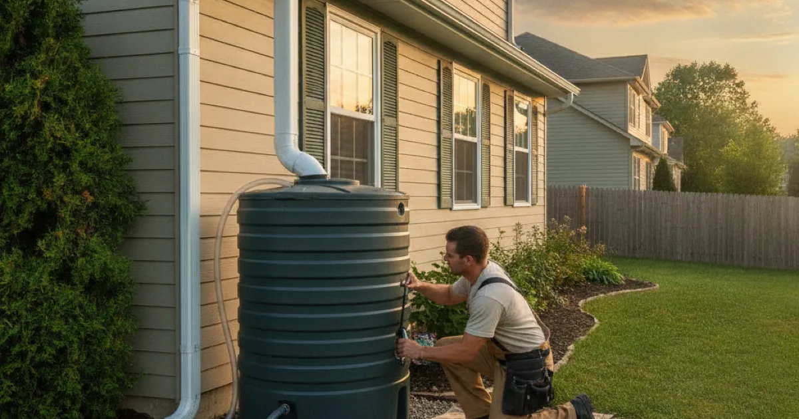

Rainwater Tank Installation in Westchester County, NY
Collecting rainwater for your garden and outdoor use is easier with the plumbing done right. Dan's Drains installs and connects rainwater tanks so your collection system works cleanly and reliably.
- Licensed & Insured
- Same-Day Service Available
- Upfront Pricing
- 15+ Years Local Experience

Need a plumber in Westchester County? We can usually help the same day.
Why Install a Rainwater Tank
A rainwater tank captures runoff from your roof for outdoor uses like watering the garden, cutting your use of treated tap water. For homeowners who water a lot in summer, it can make a real difference.
Done right, it is a clean, low-maintenance addition to your outdoor plumbing.
What Rainwater Tank Plumbing Covers
We connect the tank to your gutter downspouts, set up the overflow so excess water drains safely away, and plumb the outlet for a hose or irrigation. Proper connections keep the system clean and prevent standing water problems.
If you also want an easier outdoor spigot, we handle outdoor faucet work at the same time.
Talk to a local Westchester County plumber today.
How We Install a Rainwater Tank
We position the tank, connect it to the downspout with the right fittings, set the overflow, and plumb the outlet for how you plan to use the water. Then we confirm it fills, holds, and overflows correctly.
We keep the setup tidy and easy to maintain.
Rainwater Use in Westchester
With plenty of gardens and larger properties in this area, rainwater collection is a practical way to cut outdoor water use in the growing season. Proper overflow routing keeps it from causing drainage problems near the foundation.
The EPA guidance on rain barrels and rainwater capture covers the basics, and we handle the plumbing side.
When to Call a Pro
Call us when you want a rainwater tank connected properly, with clean gutter connections and safe overflow routing. Good plumbing keeps the system working and your foundation dry.
We can also fold it into broader seasonal plumbing upkeep.
Frequently Asked Questions
What can I use rainwater tank water for?
Typically outdoor uses like watering the garden and lawn. It reduces your use of treated tap water for those tasks. We plumb the outlet for how you plan to use it.
How does the tank connect to my house?
We connect it to your gutter downspouts to capture roof runoff, set the overflow to drain safely, and plumb the outlet for a hose or irrigation.
Will the overflow cause drainage problems?
Not when routed properly. We set the overflow to carry excess water safely away from your foundation, avoiding standing water.
Is a rainwater tank hard to maintain?
Not with a proper setup. Occasional checks of the gutter connection and outlet keep it clean, and we can fold that into routine maintenance.
Can you add an outdoor faucet to the system?
Yes. We can plumb the tank outlet for a hose connection and handle any related outdoor faucet work at the same time.
Ready to book? Reach Dan’s Drains for fast, upfront plumbing help.